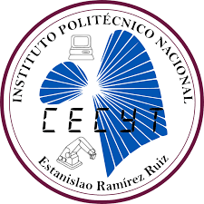

Creación de Portales Web
Centro de Estudios Científicos y Tecnológicos No. 3
"Estanislao Ramírez Ruiz"
Centro de Estudios Científicos y Tecnológicos No. 3
"Estanislao Ramírez Ruiz"
Nombre:
José Alejandro Sánchez ConsueloGrupo: 5IM6
Materia: Portales Web
Carrera: Computación
Horario: Matutino